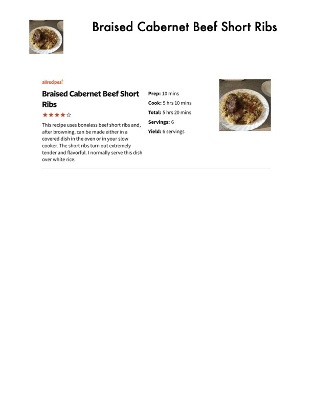

Braised Cabernet Beef Short Ribs

Original cookbook page 165
This recipe uses boneless beef short ribs and, after browning, can be made either in a covered dish in the oven or in your slow cooker. The short ribs turn out extremely tender and flavorful. I normally serve this dish over white rice.
Prep: 10 mins • Cook: 5 hrs 10 mins • Total: 5 hrs 20 mins
Ingredients
- 2 pounds beef short ribs, or more to taste
- 2 tablespoons salt
- 2 teaspoons garlic powder
- 2 teaspoons ground black pepper
- ½ cup all-purpose flour
- 2 tablespoons vegetable oil
- 4 cloves garlic cloves, minced and divided
- 3 cups beef broth
- 1 cup Cabernet Sauvignon wine
- 1 onion, sliced
Instructions
- Season ribs with salt, garlic powder, and black pepper. Sprinkle flour over both sides of the ribs.
- Heat oil in a large pot over medium-high heat. Cook about half the garlic in the hot oil until golden brown, 2 to 3 minutes; add short ribs and cook until completely browned, 2 to 3 minutes per side.
- Pour beef broth and wine into the pot; bring to a boil while scraping the browned bits of food off of the bottom of the pan with a wooden spoon. Transfer ribs and liquid to the crock of your slow cooker; put remaining garlic and sliced onion atop the ribs.
- Cook on Low for 5 hours. Remove ribs to a wide and shallow serving bowl. Ladle liquid from crock into a large skillet.
- Bring the liquid in a skillet to a boil and cook until reduced in volume by half, 5 to 7 minutes. Pour sauce over the ribs and turn ribs to coat.
Recipe #165 from collection